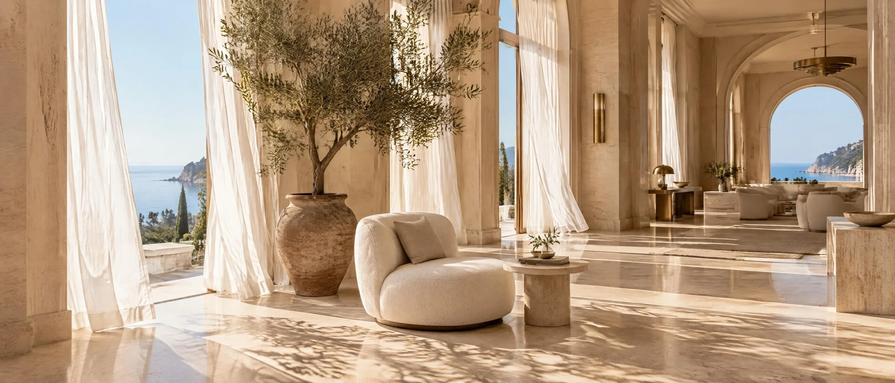
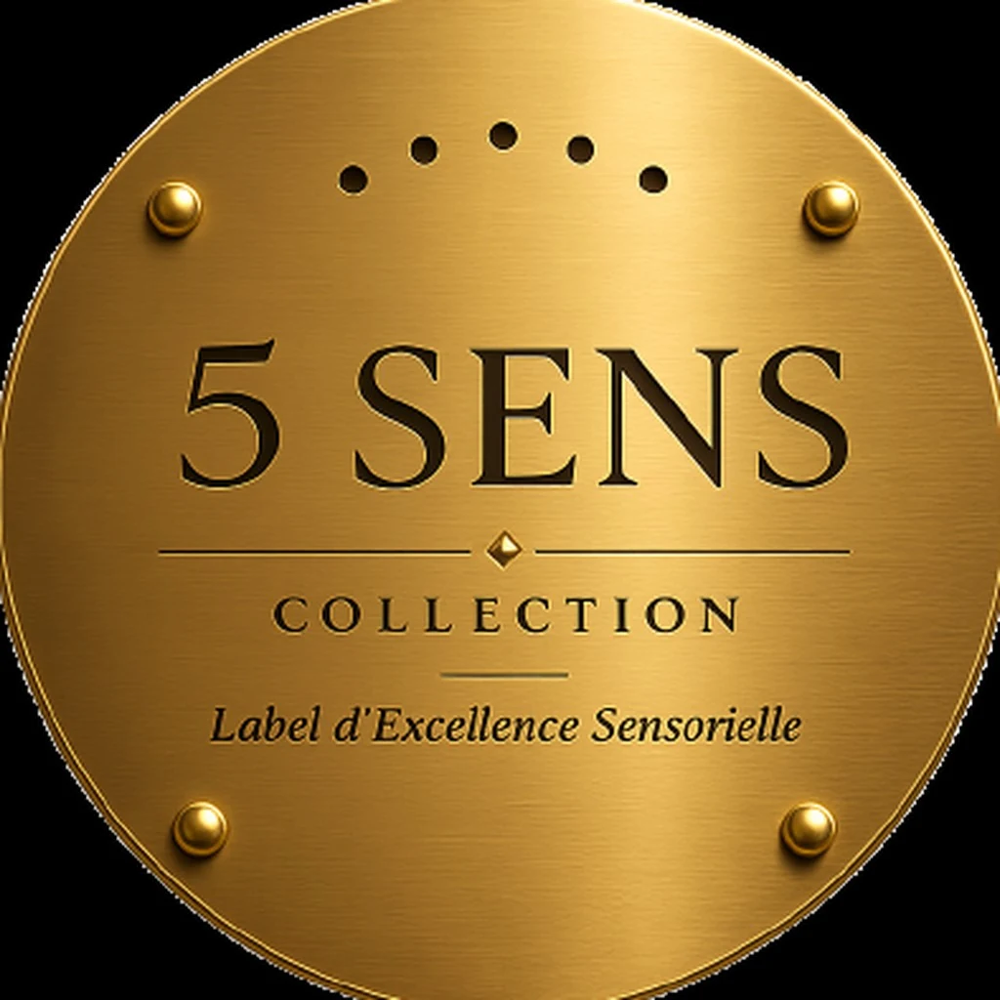
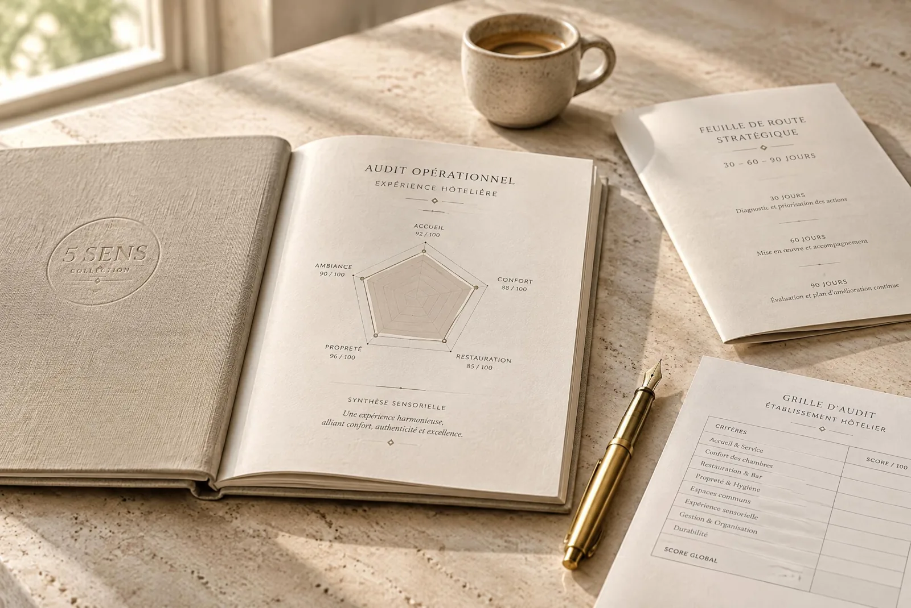
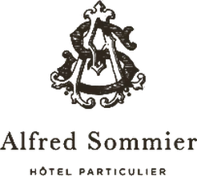
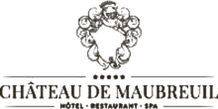
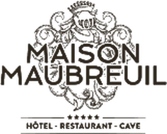
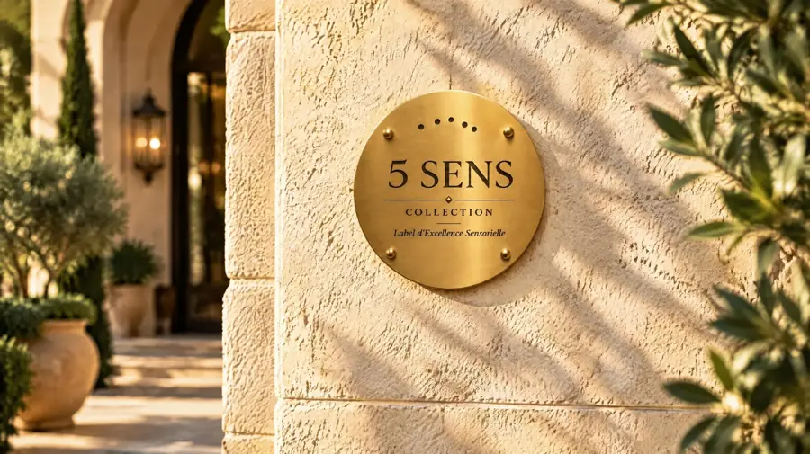
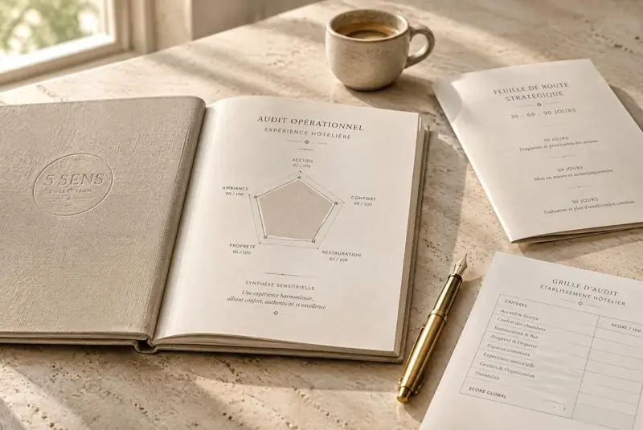
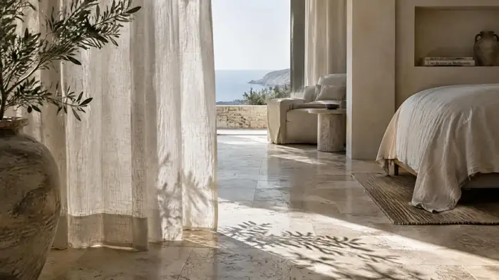
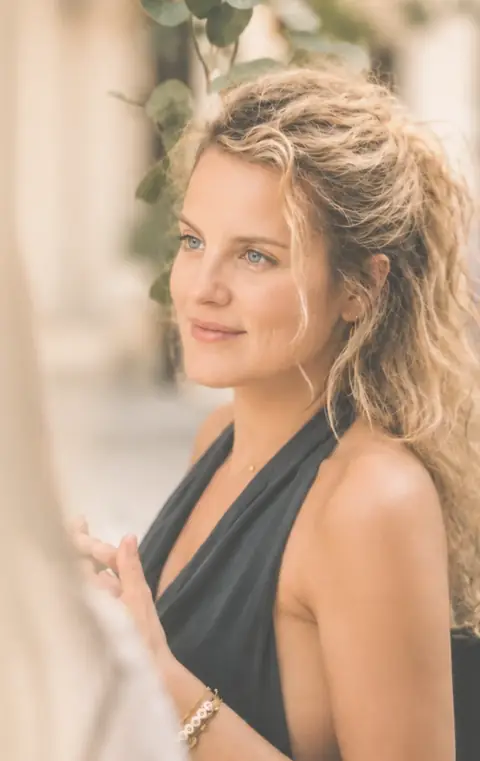

+37 à +43 %
L'environnement olfactif peut augmenter la valeur perçue et la disposition à payer.
Preuve directe : sens et revenusSource à préciser avant mise en ligneLe label d'excellence sensorielle de l'hospitalité d'exception.
Sans engagement · Strictement confidentiel
« Une odeur, une lumière, un son atteignent l'émotion et la mémoire avant d'atteindre le raisonnement. Vos hôtes ressentent d'abord, puis cherchent une raison à ce qu'ils ont ressenti. C'est là que se joue ce qu'ils retiendront de vous. »
+37 à +43 %
L'environnement olfactif peut augmenter la valeur perçue et la disposition à payer.
Preuve directe : sens et revenusSource à préciser avant mise en ligne+11,2 %
Une amélioration d'un point de la note d'un hôtel peut permettre une hausse tarifaire de 11,2 % sans diminuer la probabilité de réservation.
Preuve : réputation et prixSource à préciser avant mise en ligneN°1
Chez les voyageurs interrogés par McKinsey, le premier facteur de fidélité dans l'hébergement est une expérience qui mérite le prix payé.
Preuve : expérience et fidélitéMcKinsey & Company, enquête voyageursEt les sens y participent.
Une étude publiée en 2026 dans Annals of Tourism Research montre que les éléments sensoriels vécus par les clients sont particulièrement liés aux notes qu'ils attribuent aux hôtels.
Preuve scientifique : évaluationAnnals of Tourism Research, 2026Une note sur 100, établie sur plus de cent critères relevés en immersion. Le Label est attribué à partir de 88.
Seuil de labellisation : 88 sur 100
Une note dit qu'il n'y a rien à vous reprocher. Elle ne dit pas ce qu'on retient de vous.
Vos avis mesurent ce qui était attendu. Ils ne disent rien de ce qui reste.
La satisfaction. L'absence de reproche. Le respect de ce qui était promis.
La mémorisation. Ce qui touche. Ce qui donne envie de revenir ou d'en parler.
L'alignement réel entre ce que votre maison promet et ce qu'un hôte y ressent dans chaque espace.

Un lieu vécu tous les jours cesse d'être remarqué.
Le cerveau cesse d'enregistrer ce qui ne change pas. Vos hôtes, eux, découvrent tout pour la première fois.
Le confort visuel se dégrade avant que quiconque sache le nommer.
La mémoire olfactive est la plus durable, et la moins pilotée.
Le protocole est respecté, la rencontre n'a pas eu lieu.
L'attente crée un doute que le reste du séjour devra rattraper.

Faites défiler pour traverser les cinq dimensions.
Harmonie des sources lumineuses, mise en valeur des matières, perspectives dégagées et cohérence chromatique de jour comme de nuit.
Acoustique d'exception, neutralité des bruits techniques, signatures musicales enveloppantes et préservation du silence.
Une identité olfactive signature et mémorable, la pureté de l'air ambiant et la suppression des rémanences parasites.
Gastronomie d'auteur, rituels de table méticuleux, produits d'exception du territoire et mixologie de précision.
Noblesse des matières au contact direct, densité textile d'exception, ergonomie des poignées et des surfaces minérales.
Au terme de l'audit, les maisons qui atteignent l'exigence 5 Sens reçoivent la plaque officielle, apposée à leur entrée.
Réserver un échangeNée de quinze années passées dans les maisons les plus exigeantes. Elle supprime les irritants invisibles et transforme l'expérience en avantage concurrentiel.

Une présence discrète, dans les conditions réelles d'un hôte.
Chambres, suites, lobby, spa, tables : rien n'échappe au relevé.
Votre score, vos forces, vos priorités.
Vous recevez votre score dimension par dimension, comparable dans le temps.
Quoi faire, pourquoi, et comment le déployer avec vos équipes.
Vous recevez le manuel et le tableau de bord des irritants, classés par urgence.
Les gains immédiats d'un côté, les chantiers de fond de l'autre.
Vous recevez la feuille de route 30 / 60 / 90 jours, prête à déployer.
La plaque en laiton massif, aux maisons qui l'ont méritée.
Situez votre maison en deux minutes. Le Label est attribué à partir de 88 sur 100.
87.0 / 100
Seuil du Label : 88 / 100
Résultat prévisionnelVotre établissement réunit les prérequis pour prétendre à la labellisation après diagnostic in situ.
Ou réserver directement un échangeTous les établissements ne sont pas éligibles.
Le disque de laiton gravé, remis en main propre dans son écrin, avec son certificat et son kit de communication.
Un réseau confidentiel de propriétaires et de directeurs généraux.
Le site officiel, la presse, et un argument que vos concurrents n'ont pas.
Vingt maisons, pas une de plus, pour préserver l'exigence du label.
Intégrer 5 Sens dès la conception du projet a été une véritable valeur ajoutée. Nos clients hôteliers sont ravis : davantage de réservations, d'excellents retours clients et une fidélisation renforcée.Mathilde Peretti · Architecte d'intérieur
Votre regard particulièrement juste nous conforte dans l'importance de travailler ces détails pour aller encore plus loin dans l'expression de notre hôtel.Marine Roulière · Responsable marketing et communication, groupe Bagatelle
Ils nous font confiance



L'audit ne touche pas au design : il mesure ce que l'on ressent dans l'espace tel qu'il est. Le diagnostic sert souvent de cahier des charges au projet.
Un client satisfait ne revient pas toujours. Un client marqué revient, et en parle.
Deux heures : un cadrage de 30 minutes et la restitution. L'immersion se fait en autonomie complète.
Le client mystère vérifie des procédures. Nous mesurons ce qui se ressent, et l'évaluons.
À partir de 88 sur 100. En dessous, l'audit donne la feuille de route pour y parvenir.
Trente minutes pour situer votre maison et évaluer son éligibilité.
« Ce qu'un lieu fait ressentir s'oublie rarement. Ce qu'il fait mesurer ne se conteste plus. »Nina VienneyFondatrice de 5 Sens Collection
Étape 2 sur 2 · choisissez votre créneau
Vous recevez la confirmation par email. Nina vous retrouve à l'heure convenue.
Vous êtes sur le seuil. Cinq pièces vous attendent, chacune pensée comme une maison que l'on audite : un seuil, un parcours, une attention, un départ.



